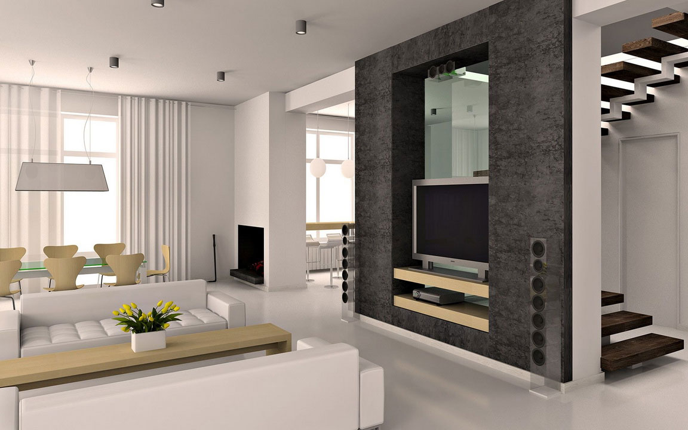
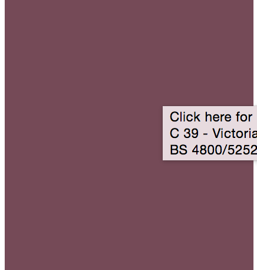

Task 2: Look at the images of a room below and please answer the questions below

SECTION A: Ceiling
Q1. Which option best describes the ceiling in the image of the room?
Paint on plain plaster
Acoustic tiles (Image 1)
Wood wool slab (Image 2)
No-fines concrete (Image 3)
SECTION B: Walls
Q2. What is the majority of the wall colour of the room?
Pale cream
White
Black
Blue
Purple 
Dark brown
Dark grey
Strong red
Mild grey
Strong yellow
Light grey
Other:
SECTION C: Floors
Q3. What is the type of floor in the room shown in the image?
Paper white
Cement screed/ PVC cream tiles/
light grey or middle buff
carpet/
iroko/ keruing/ medium oak/ polished cork tiles
beech/ birch/ maple
Oak/
brown or cream
marbled PVC tiles/ sage green or turquoise carpet
Red or brown
Quarry tiles/ dark brown carpet/ PVC dark brown, timber, dark oak coloured tiles